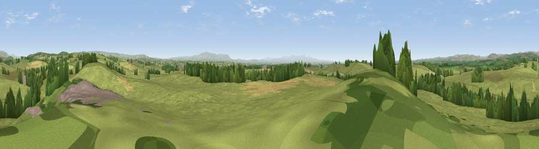

Viewpoint near Moat
#14875 in England · top 37% of its area beats it · near MoatWhere it is
The exact computed spot (NY 44775 73175). Click the marker for map links.
The view, rendered

A 360° render of this exact spot computed from the terrain model, tree cover and land cover — summer colours, afternoon light, calibrated against photographs of famous viewpoints. Real trees, hedges and buildings will differ in detail.
The panorama
Grey silhouette: terrain skyline in each direction (720 bearings, Earth curvature and refraction included). Dashed green: skyline with trees (+15 m) and buildings (+8 m) as obstacles. Blue strip: how far the ground is visible on each bearing.
Where the view opens
Wedge length = distance to the farthest visible ground on that bearing (vegetation-aware). Rings at 10, 25 and 50 km.
What fills the view
86% grassland · 7% woodland · 5% cropland · 1% built-up
Angular shares of the visible panorama (visual magnitude), not map area. Landscape diversity 0.23 (0–1 Shannon).
Key numbers
More beautiful places nearby
The staircase of upgrades: each row has a higher view potential than everything closer. Driving times are estimates from straight-line distance, calibrated against real road routing — check an actual route before setting out.
| Place | Direction | Drive | Score |
|---|---|---|---|
| Easton Hills | WSW · 1 km | ~4 min | 57.8 |
| Viewpoint near Moat | ENE · 2 km | ~6 min | 64.9 |
| Viewpoint c11481_6962 | ENE · 3 km | ~8 min | 65.2 |
| Viewpoint c11570_6936 | NNE · 6 km | ~12 min | 70.0 |
| Viewpoint near Bewcastle | E · 12 km | ~23 min | 71.8 |
| Viewpoint near Bewcastle | E · 13 km | ~23 min | 73.2 |
| Viewpoint near Bewcastle | ENE · 15 km | ~27 min | 78.9 |
| Viewpoint c11644_7156 | NE · 16 km | ~28 min | 80.8 |
55.04999, -2.86591 · source: screening · position refined by local search. Computed location — check access rights before visiting.